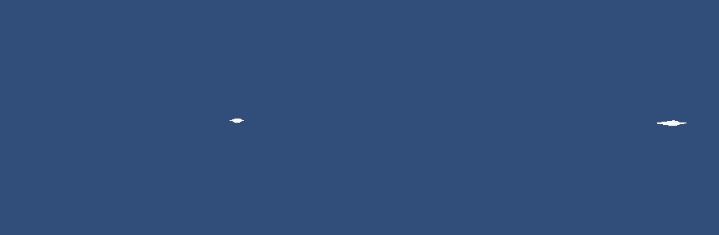
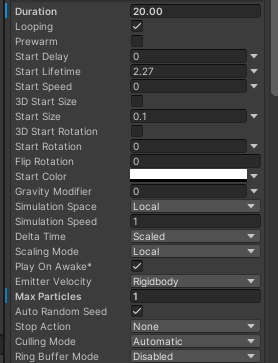
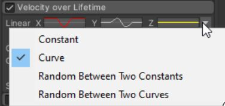
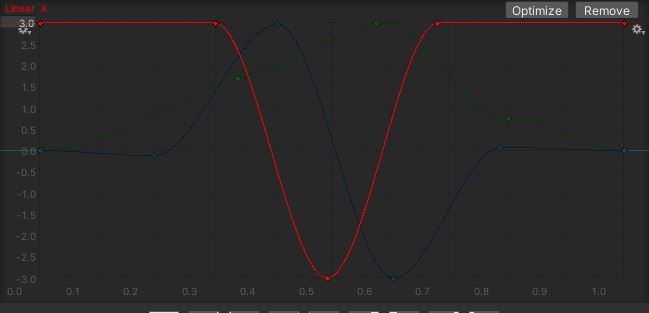
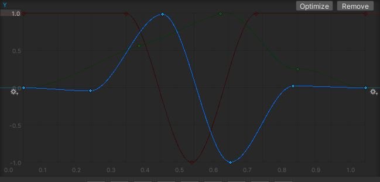
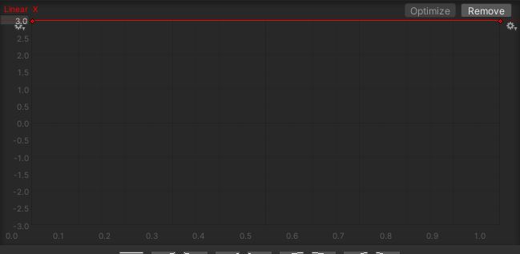
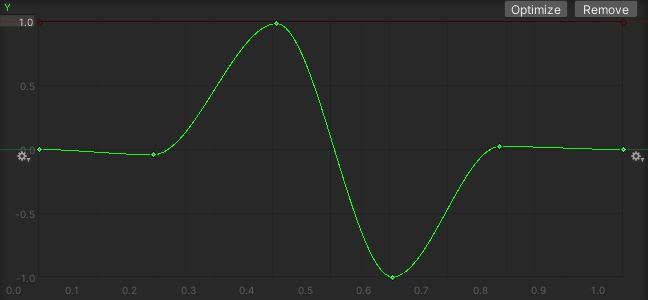
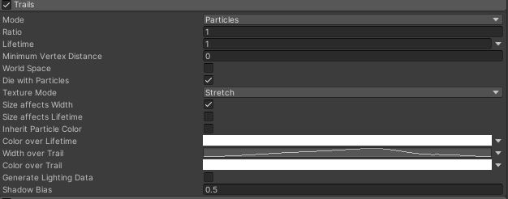
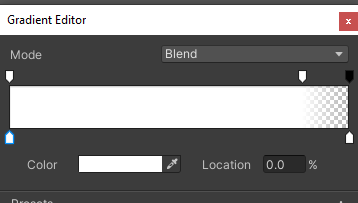
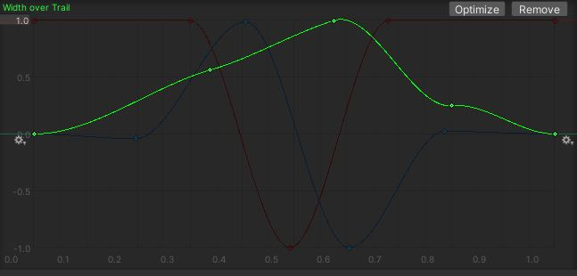

Here's another tutorial using Unity's particle system, this time for wind particles.
You can see this effect in my game Super Eyebrow Princess.
Experimenting with particles for wind.#indiedev #indiegamedev #gamedevelopment #gamedev #pixelart #madewithunity #ドット #ゲーム制作 pic.twitter.com/HKiSu9mb4p
— Ashar makes games (@AzCHIT) January 21, 2021
I'll show you how to make two types of wind particles:
Loop and Swirl

Let's start
Open a Unity project and create a new particle system in your scene.

Decrease Start Size to 0.1.
Decrease Max Particles to 1.
Set the Start Color's alpha to 0. This makes the particle itself transparent, since we only want to see the wind trail, not the particle.

Under Shape, change the shape to a box.

Enable Velocity over Lifetime.
Change Linear to Curve.

Change the X and Y curves as follows.
This gives the particles their loopy or swirly motion. You can play around with these curves to create any kind of motion.
For the loop
For X

Y

For the swirl
For X

Y

The particles now move the way we want, but to see the wind, we need to add trails to them.
Enable Trails.
If the trail is pink, assign the Default-Line material to the trail under Renderer.
Uncheck Inherit Particle Color.

Make Color over Lifetime a gradient that ends with an alpha of 0. This makes the trail fade out more smoothly.

Change Width over Trail to a curve shaped like this, so the start and end of the trail are thinner than the middle.

That gives us the effect we want. You can now increase Max Particles and the box size to get lots of wind particles over a large area.
And that's it for the tutorial. I hope you learned something new. Feel free to use this effect in your games!